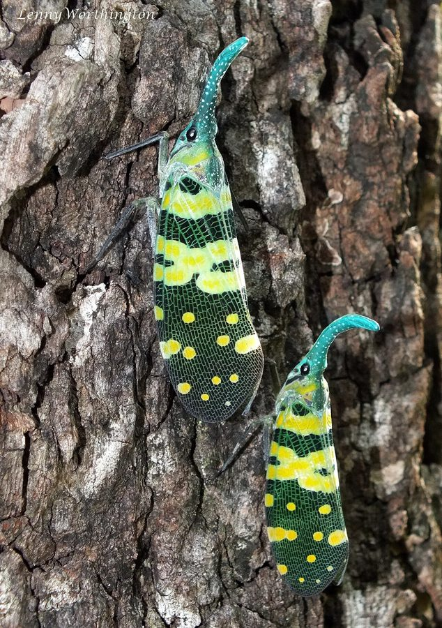

हरी-थूथन लालटेन कीड़ाGreen-snouted Lanternfly
Pyrops viridirostris · Fulgoridae · INS-0224

- Scientific name वैज्ञानिक नाम
- Pyrops viridirostris (Westwood, 1848)
- Family कुल
- Fulgoridae
- Hindi हिंदी
- हरी-थूथन लालटेन कीड़ा
- Local names स्थानीय नाम
- green snouted lanternfly, pyrops viridirostris, fulgora viridirostris, hari thuthan lalten keeda
- Status here यहाँ की स्थिति
- native
- Movement आवागमन
- Resident, here all year
- Known from कहाँ दर्ज
- Others have published records from the wider Awadh–Purvanchal plain, none yet from Basti–Ayodhya अवध–पूर्वांचल से दूसरों के प्रकाशित अभिलेख, बस्ती–अयोध्या से अभी नहीं
- IUCN IUCN
- not evaluated
- Review समीक्षा
- not yet reviewed
When to look कब देखें
Expected mainly in April, May, June, July, August, September, October. मुख्यतः अप्रैल, मई, जून, जुलाई, अगस्त, सितंबर, अक्टूबर में अपेक्षित।
Tell it apart from इनसे अलग पहचानें
हरी-थूथन लालटेन कीड़ा / Green-snouted Lanternfly
Pyrops viridirostris (Westwood, 1848) — Fulgoridae
हरी-थूथन लालटेन कीड़ा — पुराने आम, पीपल और जामुन के बड़े पेड़ों के तनों पर पाया जाने वाला एक अत्यंत सुंदर, बड़ा और चमकीला लालटेन जैसा कीड़ा। इसके सिर के आगे से ऊपर की ओर मुड़ा हुआ एक लंबा, चमकदार पन्ना-हरा सींग (थूथन) निकला होता है जिस पर सफेद बिंदियां होती हैं। उड़ते समय इसके पंखों के नीचे से चमकीले फिरोजी-नीले रंग के खूबसूरत भीतरी पंख दिखाई देते हैं, जिनके किनारे काले होते हैं।
Quick Identification त्वरित पहचान
| Feature | Description |
|---|---|
| Habit | Spectacular, large arboreal lanternfly about 31–36 mm from the tip of the snout to the end of the abdomen, 65–73 mm across the spread tegmina (Distant 1906) |
| Cephalic horn | Long, slender, gracefully upturned, brilliant emerald-green with white dots (Westwood 1848) |
| Tegmina | Ochraceous-green to olive, densely reticulate with yellow veins and white spots (Distant 1906) |
| Hindwings | Striking pale turquoise-blue or cyan-blue with broad fuscous-black apical margins |
| Expanse | 65–73 mm across the spread tegmina (Distant 1906) |
| Abdomen | Robust, ochraceous or orange beneath, dusted with white powdery wax |
Field tip: Inspect the shaded trunks of mature mango and fig trees during the pre-monsoon and rains for large colourful planthoppers with an upright emerald-green snout and turquoise underwings.
हिंदी — कैसे पहचानें: सिर के आगे निकला ऊपर की ओर मुड़ा हुआ पन्ना-हरा लंबा सींग, पीले-हरे जालीदार आगे के पंख, और उड़ते समय दिखने वाले चमकीले फिरोजी-नीले भीतरी पंख।
Morphology शारीरिक संरचना
Measurements as given by Distant (1906):
| Measurement | Value | Source |
|---|---|---|
| Cephalic process, apex to the eyes | 12–15 mm | Distant (1906) |
| Eyes to the apex of the abdomen | 19–21 mm | Distant (1906) |
| Expanse of the tegmina | 65–73 mm | Distant (1906) |
Cephalic horn and head: Head produced into an extraordinarily long, slender, ascending cephalic process curving smoothly upward and backward; process brilliant emerald-green or malachite-green, covered with minute white waxy flecks and fine longitudinal carinae; apex rounded and slightly bulbous; vertex narrow, green; eyes large, dark globose; frons elongate, smooth, bright green.
Thorax and wings: Pronotum transverse, anteriorly rounded between eyes, emerald-green with fine black punctation on the lateral lobes. Mesonotum large, triangular, brownish-ochraceous with three indistinct carinae. Tegmina elongate, subcoriaceous, apex broadly rounded; colour yellowish-green or olive-ochraceous, densely traversed by bright lemon-yellow reticulate veins, with scattered pale white spots across the basal two-thirds. Hindwings broad, delicate, basal half brilliant turquoise-cyan to pale azure-blue, apical margin broadly velvety black.
Venter and legs: Venter bright ochraceous to orange, often coated in fine white pruinose wax. Rostrum exceptionally long, extending to middle of abdomen. Legs slender, brownish-ochraceous; hind tibiae equipped with 4–6 sharp lateral spines and an apical pecten of spinules.
हिंदी: इसका सींग बहुत लंबा और चमकदार हरा होता है। आगे के पंख जालीदार और हल्के हरे होते हैं जिन पर सफेद धब्बे होते हैं। पीछे के पंख चमकीले आसमानी-नीले होते हैं जिनके किनारे काले होते हैं।
Behaviour & Ecology व्यवहार एवं पारिस्थितिकी
Pyrops viridirostris is an obligate arboreal phloem feeder restricted to mature canopy trees in old-growth orchards, village groves, and riverine woodlands. Adults spend long hours resting motionlessly in vertical alignment along the shaded trunks or large lower branches of host trees.
The prominent upturned snout was historically misidentified by early naturalists as a luminous organ ("lantern"), but it possesses no bioluminescent capacity; instead, it is an inflated cuticular extension that breaks the insect's outline and potentially serves a sensory or resonance function. The camouflaged olive-green tegmina blend against moss-covered bark. When approached by a predator, the lanternfly flicks its forewings open instantaneously, flashing its startling electric-blue hindwings and velvety black margins (deimatic display) to startle the attacker before launching into strong, undulating flight.
हिंदी: यह कीड़ा बड़े पेड़ों के तनों पर चुपचाप बैठा रहता है। पुराने जमाने में लोग मानते थे कि इसका सींग रात में लालटेन की तरह जलता है, लेकिन इसमें कोई रोशनी नहीं होती। खतरा होने पर यह अचानक अपने नीले पंख फैलाकर शिकारी को डराता है और उड़ जाता है।
Life Cycle / Phenology जीवन चक्र एवं ऋतुचक्र
| Period | Phenological Event |
|---|---|
| April–May | Overwintered nymphs complete final ecdysis as pre-monsoon heat stimulates tree sap flow |
| June–July | Adults congregate on trunks of preferred host trees; mating displays commence |
| August–September | Females deposit masses of cylindrical eggs covered in thick white protective wax on bark |
| October–November | Young nymphs hatch and feed on sap in bark fissures before entering winter torpor |
Nymphs are cryptically coloured in grey and brown, lacking the bright green snout and blue wings, but bearing a short stubby snout and a brush of filamentous white waxy tails.
हिंदी: गर्मी के अंत में इसके वयस्क कीड़े पेड़ों पर दिखने लगते हैं। बरसात के दिनों में मादा पेड़ की छाल पर सफेद मोम से ढके अंडे देती है। इसके छोटे बच्चे भूरे रंग के होते हैं और उनकी पूंछ पर सफेद मोम के बाल होते हैं।
Host Plants or Prey पोषक पौधे अथवा शिकार
- Cultivated Orchard Trees: Taps deep sap flows on trunk bark of mature Mango.
- Sacred and Wild Figs: Inhabits the massive boles of ancient Peepal and banyan trees.
- Riverine Woodland Trees: Frequently recorded on trunks of jamun and arjun.
हिंदी: यह आम के पुराने पेड़ों, पीपल, बरगद और जामुन के बड़े तनों का रस चूसकर अपना जीवन बिताता है।
Predators / Natural Enemies प्राकृतिक शत्रु
- Canopy Birds: Forest kingfishers, rollers, and treecreepers hunt adults resting on tree trunks.
- Arboreal Reptiles: Large garden lizards (Calotes) stalk lanternflies along sunny trunk surfaces.
- Parasitic Wasps: Epipyropid moth caterpillars (Epipyrops) and encyrtid wasps parasitize nymphs and eggs.
हिंदी: पेड़ों पर रहने वाले गिरगिट और नीलकंठ जैसे पक्षी इसका शिकार करते हैं। इसके अलावा परजीवी पतंगे इसके बच्चों पर परजीवी बनकर रहते हैं।
Agricultural / Human Relevance कृषि एवं मानवीय उपयोगिता
Cultural and Environmental Context:
- Biodiversity flagship. One of the most magnificent and iconic insects of Indian woodlands, celebrated in folklore and nature writing for its striking jewel-like coloration.
- Non-pest status. Despite large body size, population densities remain low and solitary, never causing damage to commercial fruit yields or tree health.
- Old-growth indicator. Dependent upon mature, rough-barked heritage trees with substantial trunk circumferences, serving as an indicator of grove conservation.
Today. Observed as an occasional, thrilling sighting on heritage trees in ancient temple groves and undisturbed riverine orchards across eastern Uttar Pradesh.
हिंदी: यह भारत के सबसे खूबसूरत और आकर्षक कीड़ों में से एक है। यह पेड़ों या फसलों को कोई नुकसान नहीं पहुंचाता और पुराने विशाल पेड़ों और बागों के स्वस्थ पर्यावरण की पहचान है।
Expected Locally स्थानीय संभावना एवं उपस्थिति
Not a field record. Written from published accounts for eastern Uttar Pradesh. No confirmed local sighting yet — if you have seen it, that is what the atlas needs.
अभी तक स्थानीय पुष्टि नहीं। यह विवरण प्रकाशित स्रोतों से है, किसी अवलोकन से नहीं।
Expected in eastern Uttar Pradesh across agricultural crops, orchard groves, riverine scrub, and rural vegetation across Basti, Sant Kabir Nagar, and Ayodhya. GBIF holds published records from the wider Awadh–Purvanchal plain, none yet from Basti–Ayodhya. A first local record would be a dated photograph of the emerald-green snout, reticulate tegmina, or turquoise hindwings, submitted with locality details through the project's About page.
Distribution भौगोलिक वितरण
Global range: Native to South Asia, distributed across India, Nepal, Bangladesh, and Myanmar.
In India: Recorded from the Indo-Gangetic plain, Assam, the Eastern Himalayas, and Central India (Distant 1906).
In Uttar Pradesh: Distributed throughout riverine forest tracts and old village mango belts across the plains.
In Basti district / eastern UP: Expected on heritage mango, jamun, and peepal trees in ancient groves.
हिंदी: भारत के गंगा के मैदानों, असम, नेपाल और मध्य भारत के घने बागों और जंगलों में यह कीड़ा पाया जाता है।
Research Questions शोध प्रश्न
- What is the preference hierarchy of Pyrops viridirostris between Mangifera indica and Ficus religiosa in Awadh? / अवध के पुराने बागों में यह कीड़ा आम और पीपल में से किस पेड़ को ज्यादा पसंद करता है?
- What is the exact internal anatomical structure and function of the elongate cephalic snout? — High-resolution micro-CT imaging of the cephalic process and internal sinuses.
- What is the spectral reflectance of the turquoise hindwings during anti-predator deimatic flash displays? — Measure ultraviolet and visible reflectance peaks of hindwing pigments.
- How do nymphal wax filaments deter parasitoid oviposition by epipyropid moths? — Bioassay parasitoid attack success on shaved versus wax-bearing nymphs.
- Does the preservation of ancient mango orchards correlate with local lanternfly occupancy? / क्या पुराने आम के बागों को काटने से इस दुर्लभ कीड़े की आबादी समाप्त हो रही है?
Similar Species समान प्रजातियाँ
| Species | How to tell apart | हिंदी |
|---|---|---|
| Red-snouted Lanternfly (Pyrops candelaria) | Cephalic snout bright red or orange; hindwings bright yellow with black tips | लाल या नारंगी सींग, चमकीले पीले भीतरी पंख |
| Crescent Dictyopharid (Orthopagus lunulifer) | Much smaller; wings transparent with crescent mark; cephalic horn small | बहुत छोटा, पारदर्शी पंख, छोटा सींग |
| Rust-colored Flatid (Flata ferrugata) | Uniform rust-brown; moth-like; wings held tent-like; no long cephalic horn | कत्थई-भूरा रंग, तंबू जैसे पंख, कोई सींग नहीं |
Field rule: Very large planthopper with a long, slender, upturned emerald-green cephalic snout dotted with white, reticulate green forewings, and brilliant turquoise-blue hindwings identifies Pyrops viridirostris.
Taxonomy & Classification वर्गिकी एवं वर्गीकरण
Original description. Described by John Obadiah Westwood in 1848 as Fulgora viridirostris in The Cabinet of Oriental Entomology, p. 8, pl. 3, fig. 4. Later transferred to Pyrops Spinola.
Subspecies. Monotypic; no subspecific taxa are recognized across its continental South Asian range.
Family and order placement. Belongs to the lanternfly family Fulgoridae, subfamily Fulgorinae, tribe Laternariini, in the order Hemiptera.
Phylogenetic notes. Characterized by an inflated cephalic process, reticulate tegmina, brightly coloured aposematic or deimatic hindwings, and large arboreal stature.
IUCN status rationale. Not evaluated in the master expansion list; it is a widespread native woodland planthopper with stable populations in forest and agroforestry habitats.
हिंदी: जॉन ओबाडिया वेस्टवुड ने 1848 में इसका वैज्ञानिक विवरण 'फुल्गोरा विरिडिरोस्ट्रिस' नाम से दिया था। बाद में इसे 'पायरोप्स' वंश में शामिल किया गया। यह फुल्गोरिडे कुल का सदस्य है।
Photo Gallery छायाचित्र दीर्घा
No photos yet — add field photos to media/species/green_snouted_lanternfly/ and run node scripts/sync_photos.js.
Photos needed आवश्यक फोटो
- [ ] Adult resting vertically on a mossy mango or peepal trunk (पेड़ के तने पर सीधा बैठा हुआ वयस्क कीड़ा)
- [ ] Close-up showing the upturned emerald-green snout and faceted eyes (चमकदार हरे सींग और आँख का विस्तृत चित्र)
- [ ] Spread-wing specimen showing brilliant turquoise hindwings (फैले हुए नीले और काले भीतरी पंखों का चित्र)
References संदर्भ सूची
- Westwood, J.O. (1848). The Cabinet of Oriental Entomology, p. 8, pl. 3, fig. 4. William Smith, London.
- Constant, J. (2015). Review of the effusus group of the lanternfly genus Pyrops Spinola, 1839, with one new species and notes on trophobiosis (Hemiptera: Fulgoromorpha: Fulgoridae). European Journal of Taxonomy, 128, pp. 1–23. doi:10.5852/ejt.2015.128
- Distant, W.L. (1906). The Fauna of British India, including Ceylon and Burma: Rhynchota, vol. 3, p. 182. Taylor and Francis, London.
- Lallemand, V. (1963). Revision des Fulgoridae (Homoptera). Deuxième partie. Faunes asiatique et australienne. Mémoires de l'Institut royal des Sciences naturelles de Belgique, 2(75), pp. 1–99.
- Metcalf, Z.P. (1947). General Catalogue of the Homoptera, Fascicle IV: Fulgoroidea, Part 9: Fulgoridae, pp. 150–155. North Carolina State College, Raleigh.
- GBIF Occurrence Data — Pyrops viridirostris (Westwood, 1848), India (2025).
Source file: species/fauna/insects/green_snouted_lanternfly.md